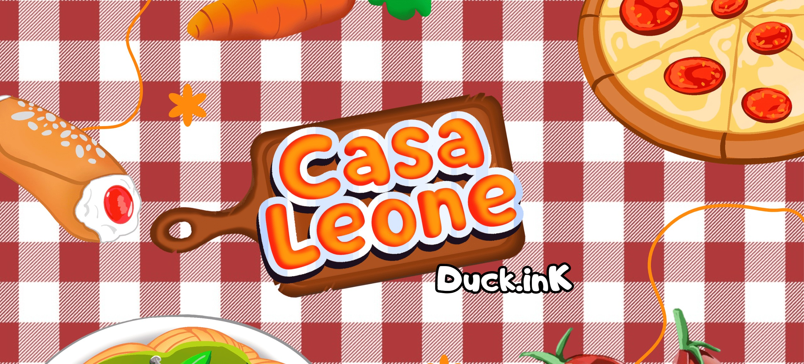
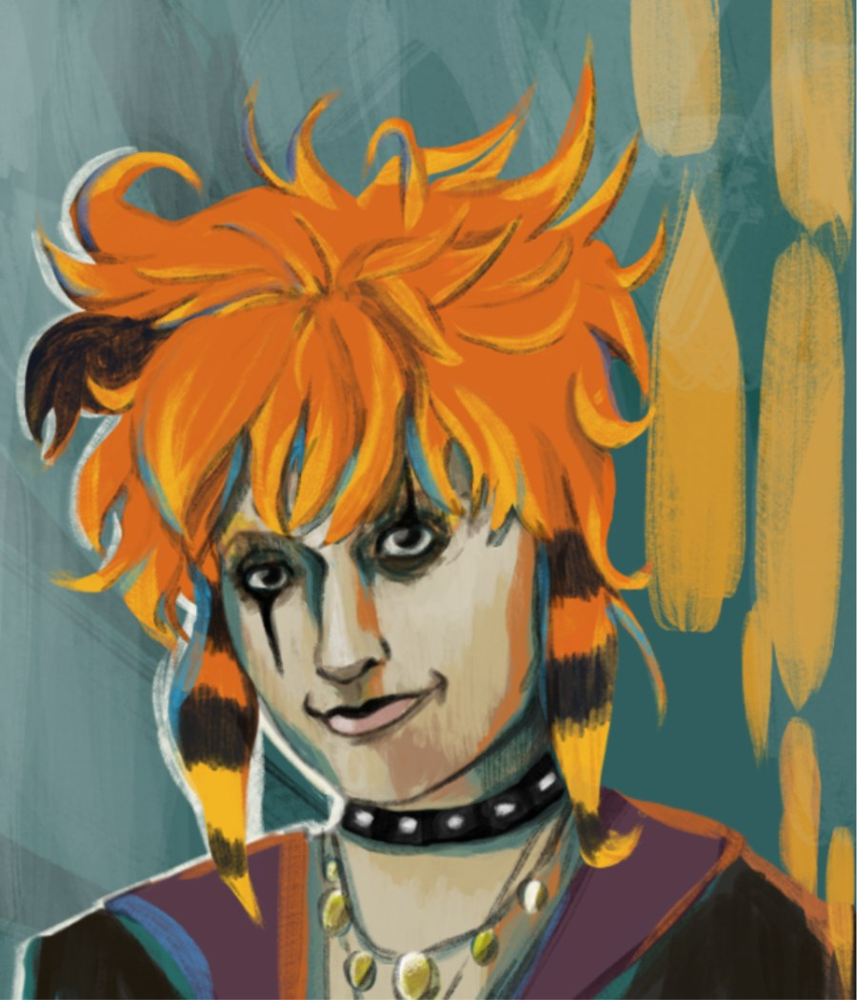
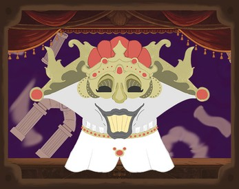
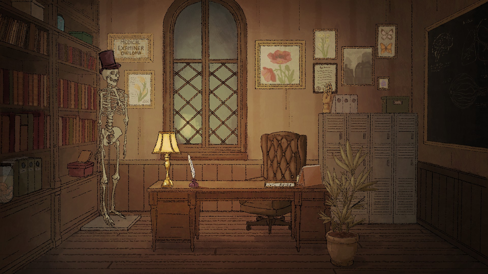
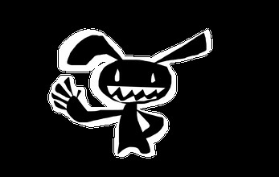
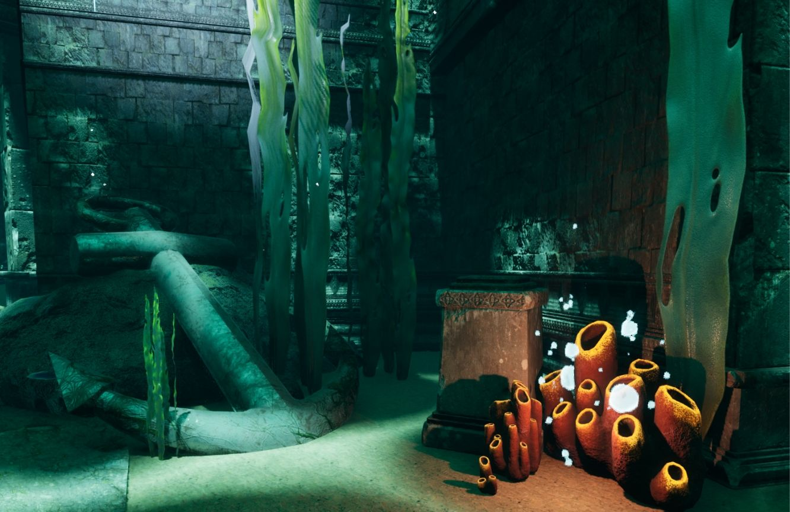

La Casa Leone
Sensibiliser au harcèlement scolaire avec des minions animaux dans un restaurant.
Rôle : Game design, level design, développement, UI et artVivien Rohaut · Game Designer
Étudiant en 3e année de Game Design à e-artsup Lyon. Je dessine mes idées pour les rendre concrètes dès la préproduction. Je recherche un stage en Game Design.

Retrouvez mes jeux et mes projets sur itch.io. Cliquez sur une carte pour voir mon travail de conception.

Sensibiliser au harcèlement scolaire avec des minions animaux dans un restaurant.
Rôle : Game design, level design, développement, UI et art
Entre metteur en scène d'une pièce de théâtre et otage d'un dieu capricieux.
Rôle : Game design
Quand Londris semble en proie à un mystérieux tueur en série, vous pouvez changer les choses.
Rôle : Game design, level design et développement
AU SECOURS, ma planète se fait envahir par des lapins mutants !
Rôle : Tout : art, développement et design
Un diorama interactif de ruines sous-marines : le joueur tourne autour d'un point central pour explorer l'environnement sous tous ses angles.
Rôle : Développement et game designJe ne dessine pas pour illustrer un jeu fini : je dessine pour le penser. Un croquis permet de tester une idée en quelques minutes, de la faire comprendre à toute l'équipe et de corriger le tir avant d'avoir écrit une seule ligne de code. Voici trois façons dont le dessin nourrit ma conception.
Je dessine mes niveaux avant de les construire : plans de salles, parcours du joueur et ambiances. Cela me permet de tester le rythme et de placer les obstacles avant d'ouvrir le moteur.
Le storyboard fixe le rythme, la mise en scène et la lisibilité d'un moment clé : une séquence, une cinématique, un événement qui doit marquer le joueur.
Une idée dessinée doit ensuite fonctionner en jeu. Je la reproduis dans Unity pour vérifier qu'elle tient : dialogues, interactions, agencement d'une pièce.
Votre navigateur n'affiche pas le PDF ici ? Ouvrez-le dans un nouvel onglet.
Étudiant en 3e année de Game Design à e-artsup Lyon, je viens du dessin : atelier à Poissy, année de prépa Entertainment à Bellecour École, et cinq ans de dessin animé et de design à TUMO Paris pendant le collège et le lycée.
Ce bagage me permet de visualiser et de présenter rapidement mes idées de gameplay, d'ambiance et d'interface, avant même qu'un prototype existe.
Les jeux qui m'ont marqué, et pourquoi.
Pourquoi je l'aime
J'aime la partie gestion.
Pourquoi je l'aime
L'histoire est prenante, les combats sont agréables à faire et à refaire, et j'aime surtout sa direction artistique.
Pourquoi je l'aime
J'aime beaucoup son style graphique ainsi que son histoire. Un Alice au Pays des Merveilles dans un monde corosé par la folie du traumatisme.
Pourquoi je l'aime
Sa partie gestion et sa partie donjon fonctionnent très bien ensemble, et c'est ce qui m'accroche au jeu.
Un projet, une offre, une question ? Écrivez-moi.